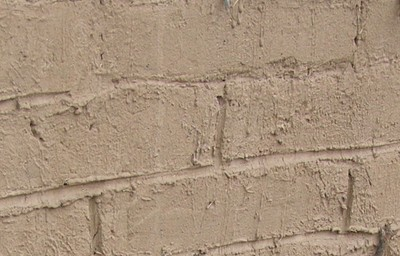
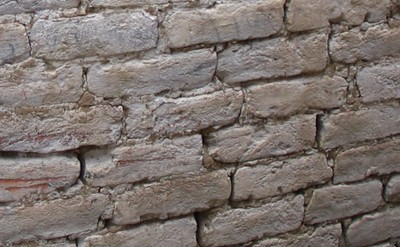

Mortero de barro [MOM]
Suelo es usado en combinación con agua para crear un mortero para varios tipos de construcción de mampostería. Está caracterizdo por su color térreo, y puede ser fácilmente removido del muro usando un objeto afilado (como una llave). Este tipo de mortero puede encontrarse en la mayoría de construcciones de adobe (e.g. América Latina y Asia), y en construcciones de mampostería de piedra en áreas rurales remotas en donde el cemento o la cal no están disponibles o son muy costosos. (e.g. Sur-este de asia). El mortero de barro es un mortero de baja resistencia, y es el más debil de todos los tipos de mortero.

Mortero de barro y bloques de adobe, Peru (S. Brzev)

Mortero de barro y ladrillos de arcilla cocida, India (D. Rai)